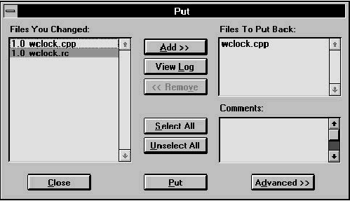

Home
| Search
| CTG
| RTL
| IDDE
| STL
Home
| Search
| CTG
| RTL
| IDDE
| STL
Last update Fri Apr 28 16:30:17 2006
|
Reference 1. Introducing Digital Mars C++ 2. Introducing the IDDE Part 2: Creating an Application with Digital Mars C++ 3. Starting a Project and Defining Workspaces 4. Generating an Application Framework 5. Defining Classes and Their Hierarchies 6. Editing Program Code 7. Adding Look and Feel with Resources 8. Testing an Application Part 3: Learning Digital Mars C++ by Example 9. Introduction to the Tutorial 10. Lesson 1: Create the DOS Application 11. Lesson 2: Generate an Application Framework 12. Lesson 3: Customize the Interface 13. Lesson 4: Add Messages with ClassExpress 14. Lesson 5: Add a Dialog Box with ClassExpress Part 4: More about Creating Programs 15. More about Projects and Workspaces 16. More about Project Build Settings 17. More about AppExpress 18. More about ClassExpress 19. Class Editor Reference 20. Hierarchy Editor Reference 21. Text Editor Reference 22. Using Version Control Part 5: More about Testing Programs 23. Controlling and Configuring the Debugger 24. Commands Available in Debugging Mode Part 6: About Managing Resources 25. ResourceStudio Resource Editor 26. Dialog Editor 27. Menu, Accelerator and String Table Editors 28. Bitmap, Cursor, Icon, and Font Editors 29. Version Information and Custom Resource Editors Part 7: Appendixes A. Expression Evaluation B. IDDE Settings and Command-Line Options C. Using NetBuild |
22. Using Version ControlThe IDDE's Version Control System (VCS) allows programmers to work safely with the same source files simultaneously, integrate their changes, rebuild their own sources, and store updated master files in a common master archive.The VCS works in combination with INTERSOLV's PVCS, a popular version control program for the PC. However, VCS offers significant functional improvements over PVCS alone, because it is integrated with the IDDE's project system and has access to information stored in the project (.prj) file. Digital Mars's VCS guards against accidentally overwriting changes made by others and provides the highest level of support possible for keeping both your private project directory and the master project directory fully synchronized. Note: If you do not have PVCS, you need to purchase it from INTERSOLV before you can use Digital Mars's VCS. See the PVCS documentation for information on PVCS features and commands. This chapter assumes a knowledge of PVCS and a familiarity with basic version control concepts. The chapter focuses on using the group-oriented model of software development that VCS makes possible, and it explains how to use VCS to build and maintain projects. Note: The IDDE's Version Control System (VCS) is supported only in the 16-bit version of Digital Mars C++. Overview of VCS ConceptsThis section defines basic terms used in this chapter and compares the parallel model of version control to the linear model supported by other version control systems.The next section, "Setting Up Version Control with VCS," presents an overview of how you or your project team can use VCS to establish and maintain version control on software development projects of any size. TerminologyThe following terms are used throughout this chapter:
Version control modelsThere are two basic models for version control:
Setting Up Version Control with VCSThis section gives you an overview of how you can use VCS on your software development project. The remainder of the chapter explains how to use VCS to perform the operations introduced here.Using the linear model with VCSIn the linear model, VCS locks a revision when someone GETs it; that is, VCS prevents others from making a private copy. Thus, only one person may work with a revision at a time. It is even possible to lock all revisions that make up a particular version.After changing the revision, the person who receives it must PUT it back into the master archive before others can make changes to it. The advantage of the linear method of version control is that you do not have to collate (merge) sets of changes to a revision. The obvious disadvantage is that only one person can work on a file at a time. In large development projects in which many people are making changes to related groups of files, this model is often unworkable. Using the parallel model with VCSThe parallel version control model allows two or more people to work simultaneously with copies of the same revision— a clear advantage even in a small work group. The disadvantage of this model is that each person's changes must be merged with changes made by others, so the master archive of a revision incorporates everyone's work and the related changes made to other files (sometimes called "dependencies").When working in a parallel version control environment, the revisions and versions used by the development team are stored in a master archive, usually on a network. Developers GET a revision (or more typically a group of related revisions) from the master archive and work with the copies (workfiles) in their own private project directory. After making changes to a group of workfiles, developers must MERGE their changes into the latest version of revisions of the files. This is done in the private project directory because it often involves identifying changes made by others in the interim, along with resolving dependencies in other revisions that were affected by other people's changes. Note: In your revised file, be sure to identify the revision with which you want your changes merged. You make this reference by adding a $revision entry in the file. When changes are merged successfully, and all related changes have been made to affected revisions in the private project directory, each developer PUTs the new revisions back into the master archive. If a revision has been modified during the MERGE, it must be remerged before it can be PUT into the archive. VCS warns you of this automatically and gives you a way to prevent other people from merging changes into the archived version of a revision until you have successfully PUT it. The parallel model also supports branching of revisions. When you create a branch of a revision, you can PUT it back into the archive without performing a MERGE. This allows others to GET your changes to a revision. You use the branching mechanism if you want a set of changes available to you but you do not want to MERGE the changes until your work is complete. For more information, see "Creating a new branch," later in this chapter. Setting VCS OptionsThis section explains how to use the options in the VCS page of the Project Settings dialog box to set up version control parameters that specify the rules VCS follows when you GET and PUT files.To open this dialog box, open the project you want to work with, and choose Settings from the IDDE's Project menu. In the Project Settings dialog box, select the VCS tab. The VCS page is shown in Figure 22-1.
[Figure 22-1 VCS page in Project Settings dialog box Choosing a Development ModelThe Development Model radio buttons specify the development model that VCS uses. Select the Parallel model, described earlier in this chapter, unless you are the only person working on the files in a project.Select Linear if you are working alone, or if you need to deny other developers access to revisions you are working on. You can switch from the parallel to the linear mode when, for example, you need to prohibit GET operations on revisions you are merging (see "Merge Options," later in this chapter). The IDDE sets the rest of the VCS options for you, based on the development model you select, as described later in this chapter. If you need more control over the version control process, you may change the default settings. This is not usually necessary. Get OptionsThese options specify how VCS handles your requests to GET revisions from the master archive:
Merge OptionsThe Lock Master File on Merge Setting prohibits others from executing a PUT operation on a revision in the master archive while you are performing a MERGE on it. This option is off by default in both development models.Creating a VCS Configuration FileA VCS configuration file defines a series of variables that tell VCS where to look for and create files. You can create a VCS configuration (.cfg) file with the integrated editor or any other text editor. You need a .cfg file for each project in which you use VCS.A sample configuration file, vcs.cfg, comes with Digital Mars C++. (It is installed in \dm\samples\windows\wclock by default.) The sample vcs.cfg contains information that VCS needs to work:
Selecting the configuration fileBefore you use VCS for the first time on a project, you need to select the configuration file for the project:
The PVCS Registration dialog boxThe first time you open the Set VCS Configuration dialog box, the PVCS Registration dialog box is displayed. You must have an INTERSOLV LAF (License Administration Facility) code to use PVCS in the IDDE. INTERSOLV supplies the LAF code to licensed users. For more information, please contact INTERSOLV. Type the code in the License Code textbox, then click OK to continue. After the PVCS Registration dialog box disappears, a message informs you that you must restart Windows.The User database directory textbox shows the database directory in which the license database is placed. This directory should be a shared directory on the network if multiple developers are using the same copy of the IDDE from the network. If developers have individual copies of the IDDE, do not change the text in this box. Note: If you have PVCS version 5.0 or later, the IDDE does not display the PVCS Registration dialog box. Putting Revisions into the ArchiveWhen you PUT a revision in the master archive, VCS updates its revision number and time stamp and marks it as "not changed" with respect to the corresponding workfile in your private project directory.Note: If, while you were performing a MERGE, another person has PUT a new revision of a file you want to PUT, VCS warns you with a modal dialog box that you must perform another MERGE operation on the revision. To prevent others from working on a revision while you are merging it, check Lock Master File on Merge. See the section "Merge Options," earlier in this chapter, for more information. To begin a PUT operation, choose Put from the Project window's VCS menu. The Put dialog box is displayed.  [Figure 22-3 Put dialog box The Put Candidate Files listbox shows those workfiles in your private project directory that have changed since you checked them out. Click the Add button to add files from this list to the Files to Put Back listbox; this shows the files you want to PUT into the master archive. To remove a revision from the Files to Put Back list, select it and click on Remove. Click on Select All to select all files in the current listbox. Click on Unselect All to deselect them. Select a file name and click on View Log for a summary of who changed the latest revision of that file and the changes that were made. To associate comments with all selected files in the Files to Put Back listbox, type them into the Comments textbox. Click on Put to PUT the files listed in the Files to Put Back listbox into the master archive. Click on the Advanced button and the Put dialog box expands to show additional options. When you PUT files into the archives, you can specify a group of files using the Put Special textboxes. The Put Special options are:
Creating a new branchUse the Create New Branch option to maintain a private set of revisions in the master archives without having to MERGE them. When you have a private branch, you can change a file and perform PUT operations as often as necessary, without affecting other developers.When you are ready, you can MERGE your private revisions back into the master archive. Note: A MERGE is the only way to make the changes in a branch available to other developers. Getting Revisions from an ArchiveBefore you can work with archived revisions, you need to GET them from the archive and copy them to your private project directory using the Get dialog box, shown in Figure 22-4. (Both the archive directory and your private project directory are specified in the VCS configuration file for the project.)When you GET a revision from an archive, VCS records the revision identification numbers of the files, marks them as unchanged and not new, and adds them to your project (if you so specify in the Get dialog box). If you are using the linear development model, VCS locks the archived revisions when you GET them so nobody else can GET them until you PUT them back. If you are using the parallel model, more than one developer can check out the revision unless you specify Get and Lock on the VCS page in the Project Settings dialog box. To GET revisions from the master archive:
Show Archives provides the following settings:
Merging RevisionsIf you are working with the parallel development model, after you GET a revision and make changes to it, you may need to MERGE those changes into the master archive. The master archive presumably contains changes made by others that your revision does not include. If no other developer has changed the file, then you do not need to MERGE; you simply PUT the new revision in the master archive.Note: Remember that in your revised file, you must refer to the revision with which you want your changes merged. You do this by adding a $revision entry in the file. When you MERGE a revision, VCS creates a backup of your revision in your private project directory. In addition, VCS provides all possible support for performing MERGE operations safely. To merge your changes into another revision in the archive, choose Merge from the Project window's VCS menu. The Merge dialog box opens.
[Figure 22-5 Merge dialog box The Merge dialog box contains four listboxes:
Click the View Changes button to show the changes you need to resolve when you MERGE the selected revision. When you click View Changes, an annotated change file appears in an IDDE editor window. See the PVCS documentation for information on the format of the display and the meanings of symbols. When you are ready to perform the MERGE operation, click on Merge. VCS guides you through a three-way merge, incorporating your changes and those made by others into a new revision. Because the IDDE automatically makes backup copies of both the revision in your private project directory and the revision you want to MERGE it with, you can undo a MERGE (before closing the Merge dialog box) by clicking Undo Merge. Testing the MERGE operationTo test the MERGE, return to the Get dialog box, click on Advanced, and select Except Merges. GET the files in this list and build them using the IDDE (see Chapter 8, "Testing an Application," for information).Using the VCS ManagerUse the VCS Manager for additional flexibility in managing revisions and versions. You can apply a version name to a set of archives when the software reaches a significant release step, such as beta or final release. You can also delete a named version or revision from an archive. Before deleting a version or revision, make sure that you are deleting the right one, as a deleted version or revision cannot be recovered. Finally, the VCS manager lets you lock or unlock a version or revision.To use the VCS Manager in the Project window, choose Manager from the VCS menu. The VCS Manager dialog box shown in Figure 22-6 is displayed.
[Figure 22-6 VCS Manager dialog box Note: You probably will not need to use the VCS Manager dialog box on most projects. The VCS Directory listbox contains the names of revisions to add to a version or revision. Double-click on the file name to add it to the Selected Files listbox. Click on Select All to select all files. To assign a version name, type the name, such as beta, in the Version textbox, and click on the Assign button. This assigns the version name to all files in Selected Files. The Assign and Unassign buttons are available only if you specify a version name in the Version textbox. To control access to a particular version or revision, specify the revision (its number) or version (its name) in the appropriate textbox, then click on Lock to deny access or Unlock to allow access. To delete a version or revision, specify the appropriate information in the Revision or Version textbox, and click on the Delete button. Creating a Master ArchiveWhen you begin using VCS, it may be your job to create the master archive to and from which others GET and PUT files. This section describes the process of creating a master archive.The master archive contains the revisions to all source files in a project. It also records information about changes from the previous revision, a history of the changes since the first revision, a record of who changed the files, the comments attached to the revisions as they were changed, and the date and time that each revision was PUT into the archive. See the PVCS documentation for additional information. To set up a master archive, you PUT the workfiles in your project directory in the archives using the Put command. This command takes files from the original directory and creates the archives automatically. See "Using the VCS Manager," earlier in this chapter, for more information on the Put dialog box and how to use it. When you PUT files in an archive, VCS changes their extensions automatically. The last character of the extension on each file is changed to V. For example, the file extension on abc.cpp becomes abc.cpv. If the file does not have an extension, VCS adds the extension .__v to the filename (two underscores and a v). To create a master archive from the workfiles in your private project directory:
|